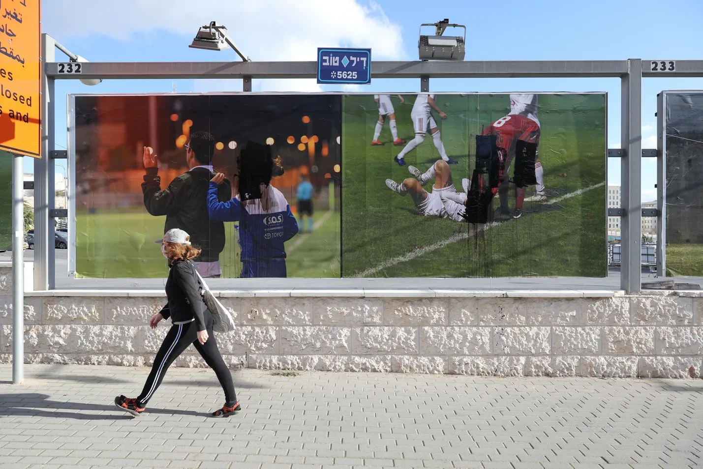
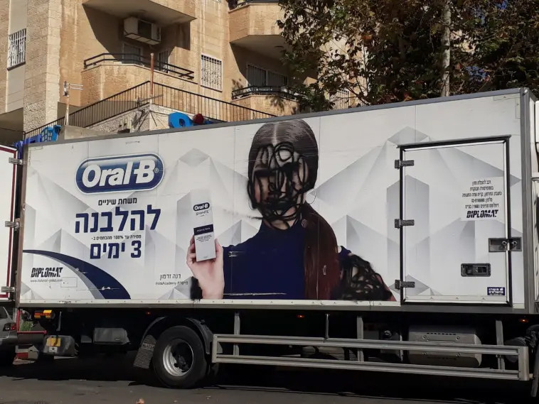
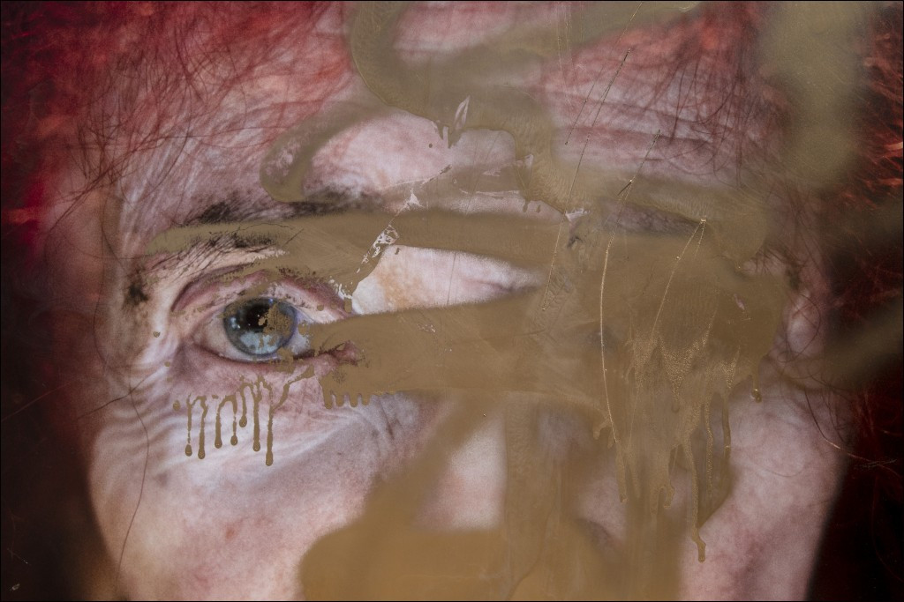
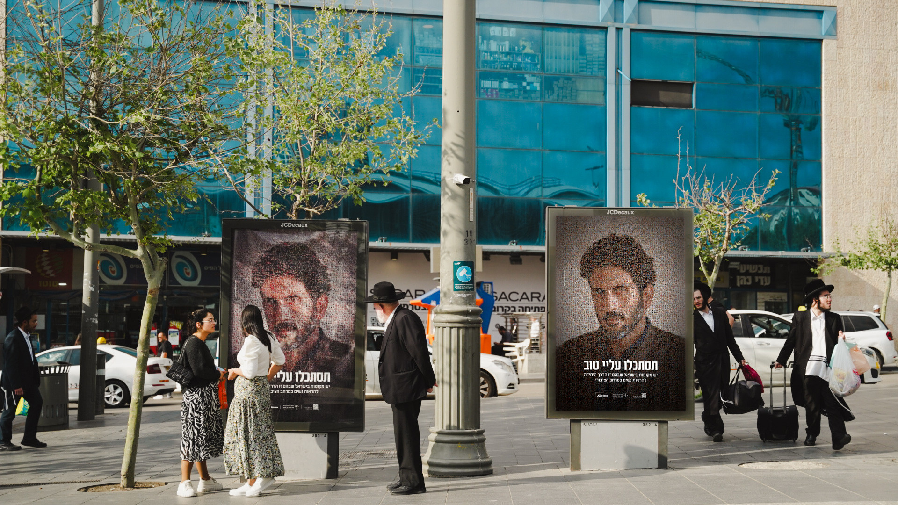
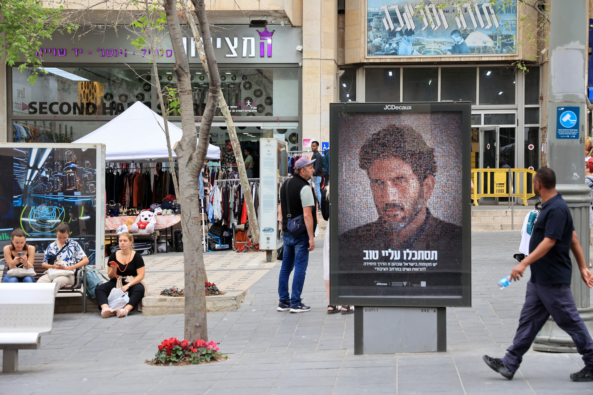
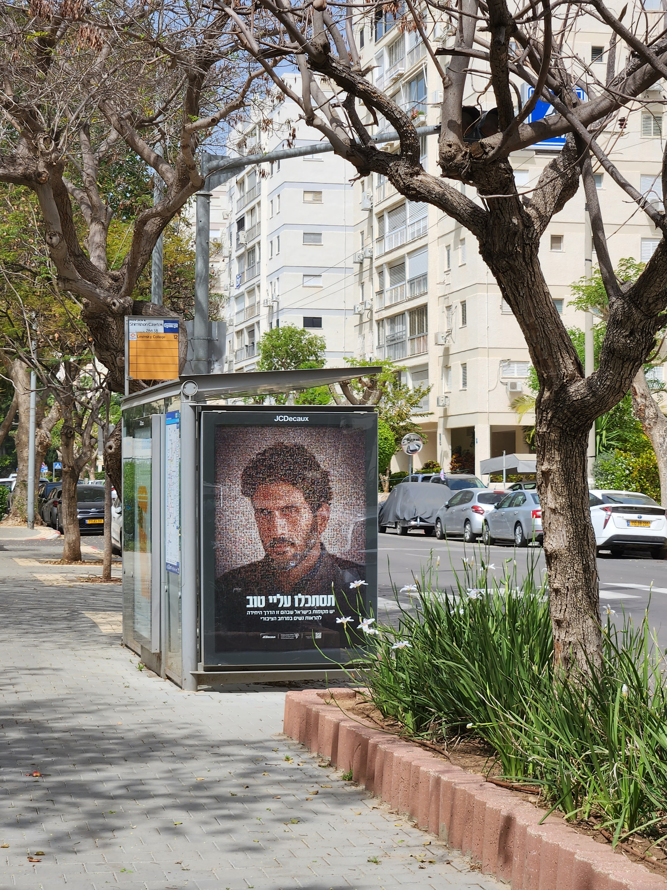
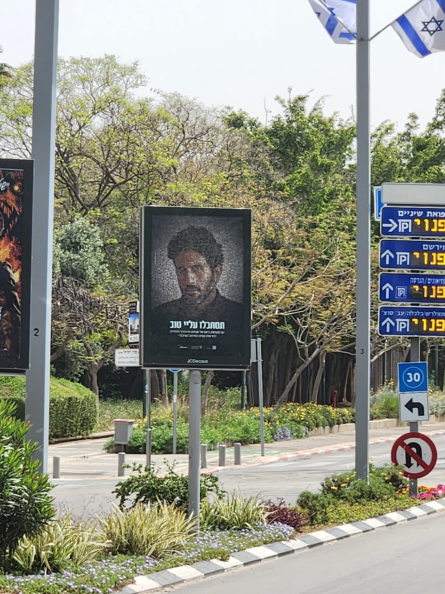

OOH / REAL TIME MARKETING / PR
'Hidden Portraits'
Israel Women's Network X JCDecaux Israel
For more than a decade, religious extremists in Jerusalem have been defacing women’s faces from outdoor media. Their faces have been spray painted, scratched out and even burned down.
As a consequence, the city of Jerusalem started to avoid using female models. With this self imposed censorship and no women represented in the public sphere, girls in Jerusalem are growing up without female role models.
Together with JCDecaux and Israel Women’s Network we launched ‘Hidden Portraits’, a nationwide OOH campaign featuring what seems like a mosaic portrait of international actor Tsahi Halevi made out of hundreds of female portraits defaced over the past decade.
'Hidden Portraits’ Fights Years of Vandalism
against Women in Jerusalem
with Daring Out of Home Campaign'
VANDALISM BEFORE CAMPAIGN / PROBLEM



NO FEMALE PORTRAITS WERE DEFACED FOR THE FIRST TIME IN 10 YEARS
CAMPAIGN SHOTS / EARNED MEDIA




Idea / Concept: Sako Tvildiani & Nata Oghrapishvili
Creative Director: Cesar Garcia & Julio Alvarez
Agency: Cloud Factory, by The Network, Blue Oyster, ACW-Grey Israel.